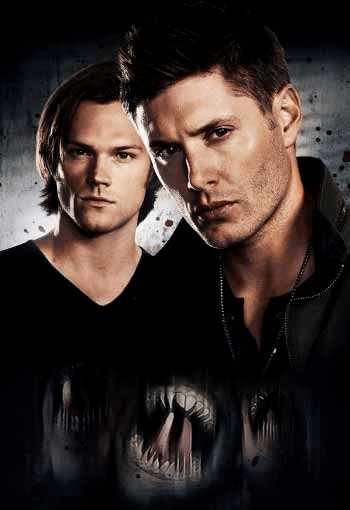

При каком условии вернется «Сверхъестественное» после 15 сезона
Марк Педоуиц, президент The CW, намекнул на то, что сериал «Сверхъестественное» пропадет с экранов не навсегда. Поскольку фанаты и даже сами актёры готовятся попрощаться, комментарии Педоуица говорят о том, что он не спешит отпускать драму с охотой на монстров, которая длится уже 15 сезонов. Ещё в марте звёзды сериала объявили, что 15 сезон станет финальным для сериала. В видео, опубликованном в Twitter Джареда Падалеки, актёр, с которым рядом находились его коллеги по цеху, Дженсен Эклс и Миша Коллинз, они сообщили эту новость. Чётко сдерживая эмоции, трио заявило, что, пусть они и впечатлены 15 сезоном, он станет последним. Согласно CBR, Педоуиц выступил с речью на недавнем пресс-туре Премии Ассоциации телевизионных критиков, он открыто выразил нежелание расстаться с братьями Винчестер: Если вы сможете убедить их вернуться, я только за. Хотя сам по себе комментарий, безусловно, имеет игривую склонность, Педоуиц показал, что у него были долгие и грустные разговоры с Эклсом и Падалеки, так как и сами продюсеры не планируют продолжать сериал. Дополнительные источники сообщили, что Эклс не исключает возвращения к роли Дина Винчестера в будущем. Это путешествие когда-нибудь должно закончится, по словам актёра. Он назвал решение навсегда закрыть двери или сжечь мосты «глупым».